Изпитите в СофтУни обикновено са много продължителни и мъчителни, като само най-добрите оцеляват след тях...
- Когато се подготвяте за изпит...
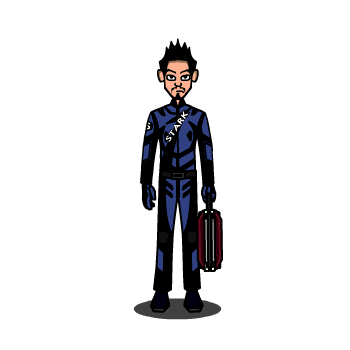
- Когато закъснявате за изпита...
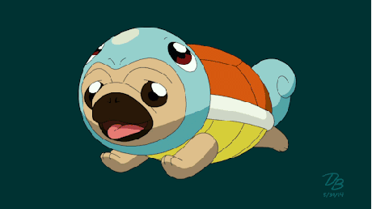
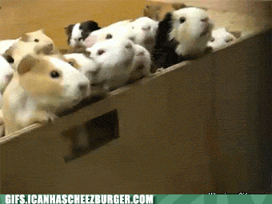
- Когато Наков ви каже, че задачите за много лесни...
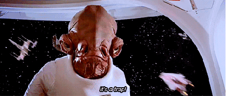
- Когато видите пета задача от изпита по C#...

- Лицето ви, когато видите задачите от изпита по Java...
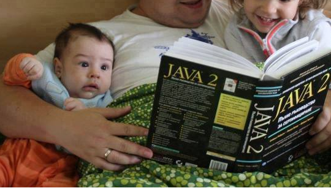
- Когато Judge ви дава само 20 точки за задачата...
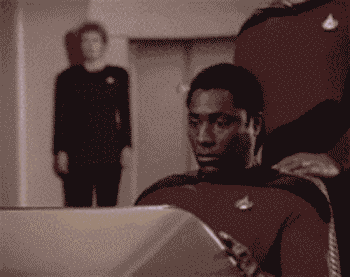
- Когато Judge ви дава 80 точки и се чудите защо...
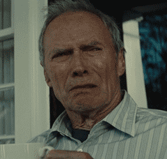
- Когато най-после получите 100 точки...
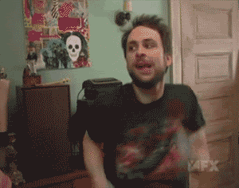
- Когато трябва да дебъгвате, за да си намерите грешката...
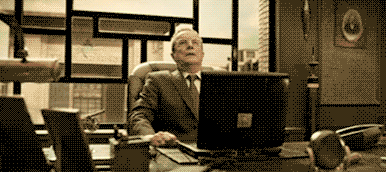
- Когато излизате за почивка...
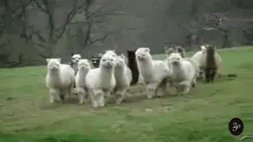
- Когато получите Compile Time Error...
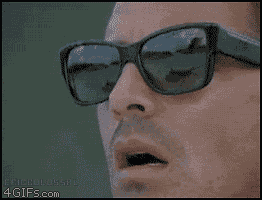
- Когато си тръгвате по-рано, а другите още решават...
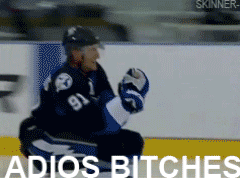
- Когато някой друг си тръгва по-рано, а вие сте още на втора задача...

- Когато остават 5 минути, а вие не сте готови...
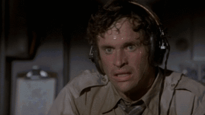
- Когато видите класирането в Judge и сте на 176 място...
- Когато изпита приключи...
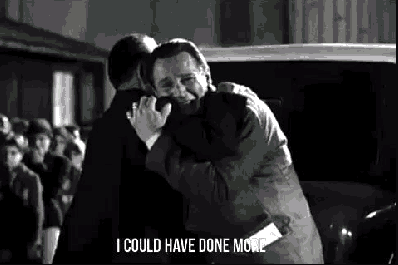
- Когато ви кажат, че е имало по-лесен начин да се реши задачата...
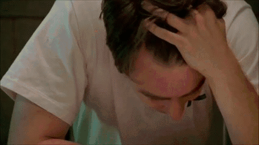
- Когато приятелите ви разберат, че не сте решили най-лесната задача...
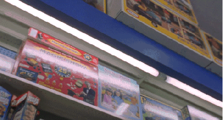
- Когато видите авторските решения...
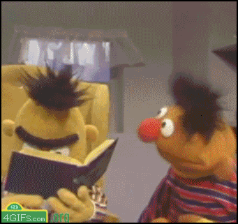
- Когато излезне класирането и оценката ви е 3.02...
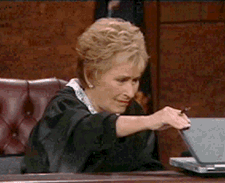